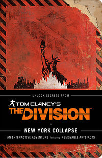

Mr. Robot tie-in book
Red Wheelbarrow is the personal notebook of Mr. Robot's main character, Elliot Alderson, which can be seen in Season 2 of the show. Puzzability was hired to write hidden puzzles for the book — secret messages that readers can find if they look hard enough. Red Wheelbarrow, the ultimate journey into the world of the show, is available wherever fine slightly singed books are sold.

Ballot boxes
The Wall Street Journal asked Puzzability to write a special set of election season puzzles for their subscribers.

Solve to Survive!
New York Collapse is a chilling meta-novel that serves as a companion piece to the new game Tom Clancy's The Division — and it stands on its own as well. The book takes the form of a distressed survival guide heavily used and annotated by the survivor of a Manhattan pandemic. In the story's world, the guide's author had a terrible secret: He knew this disaster was coming. Puzzability was brought in to hide his coded warnings throughout the survival guide, and to hide the survivor's added coded messages as well. These puzzles appear in the book's text and in removable artifacts like a missing persons poster, a transit pass, and a foldout map of New York, all of which help bring the survivor's harrowing experiences to life in a way that breaks new ground in publishing.

Project Architeuthis Wins 10 Awards
Puzzability's groundbreaking Project Architeuthis has won 10 awards for its excellence and marketing effectiveness. The code-solving alternate reality game, created to drive awareness of U.S. Navy Cryptology, played out in real time on multiple social media platforms in May 2014.